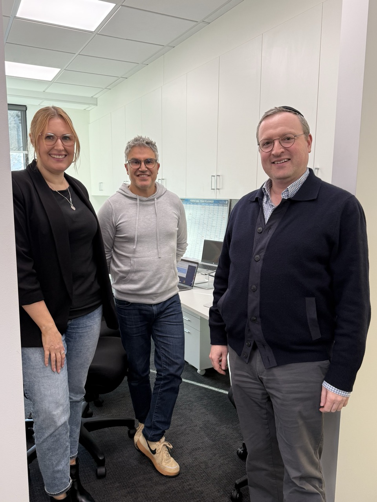

Michelle, Mark and P.C. at the end of Day One.
Parc Wealth is three businesses under one roof — financial advice, mortgage broking, and insurance broking — with an AFSL to protect and three full-time para-planners whose time is worth far more spent on judgement calls than on formatting. As PC put it when we sat down to start: "There's efficiency creation in so many parts of this business — that's what I'm interested in." That's exactly the brief Day One was built around.
Like most firms this size, they're already deep in Microsoft 365 and Copilot, and understandably protective of it — client data doesn't leave their environment, full stop. So before we touched a single real client file, we agreed the pattern that shaped the whole two days: prototype and think things through using dummy data, then rebuild the finished approach back inside their own Microsoft tenancy, where the real data lives. No compromise on security, no slowdown on capability.
We started with fundamentals — how instructions actually work, what a project remembers and what it doesn't, how to hand over just enough context without overloading it. Michelle picked it up fast. By late morning she wasn't just following along, she was building — writing her own instruction set for a real piece of Parc's compliance work and watching the output sharpen as she anchored it to the actual regulatory framework it needed to satisfy.
This is the part I'm proudest of. In one afternoon, working side by side across two platforms, we built and deployed two working tools onto a new internal Parc intranet page:
We tested the audit tool against a full dummy client file — fact find, statement of advice, letter of engagement, meeting notes, the lot. What used to take days and a paid external review came back in seconds, with a clear read on what was fine and what needed a second look from a human. Not a black box saying "trust me" — a tool that shows its working and still leaves the judgement call where it belongs.
By the time P.C. joined us at the end of the day to see it running, both agents were live, tested, and already shared with the team.
"That's now you can go in there and chuck in a document, and it comes back with — yep, this is compliant, this isn't, you need to go back and check."
Michelle Bryant, COO"We've got something tangible to build on from here — I wouldn't have been happy going home without that."
Mark, closing out the dayWe're regrouping in a few days — giving Michelle time to think through what the highest-value projects and tools could be next — before we reconvene ahead of Day Two. PC's already got his eye on two more: using AI to communicate with their active customer and prospect database, and getting more out of LinkedIn.
One day in, and the team has two working tools they built themselves, understand, and trust. That's the bar for this work: not a demo, something that survives Monday morning without me in the room.
Take the free assessment and see your results instantly — plus 2 free AI guides sent straight to your inbox.
Take the Free AI Assessment →